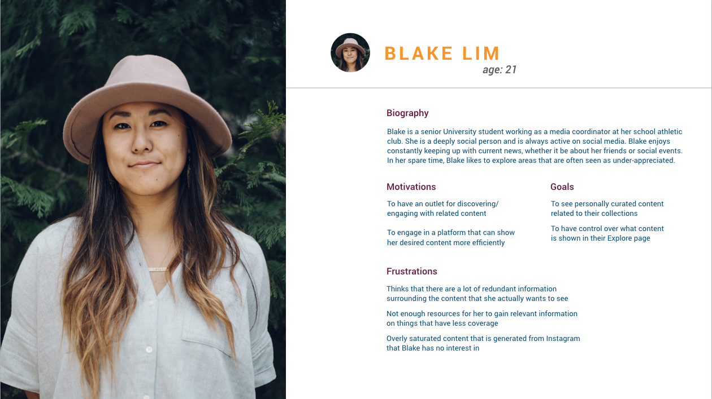
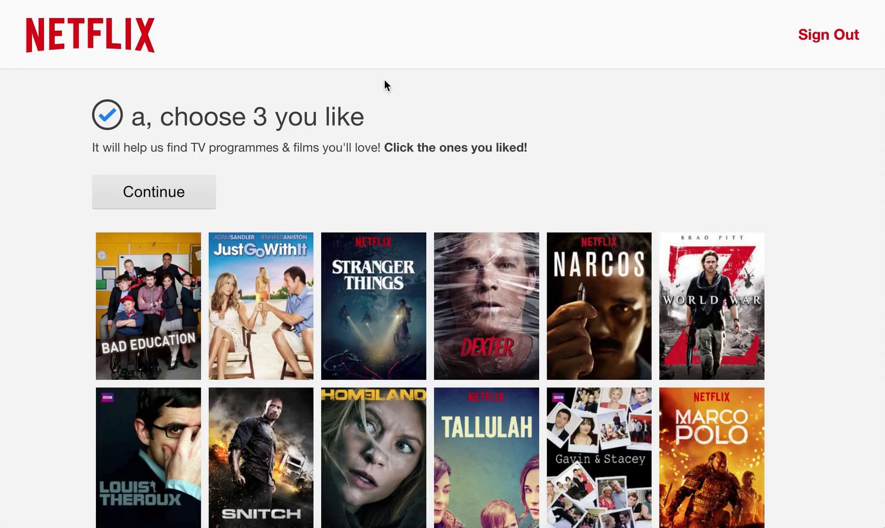

Instagram
Explore
Instagram is a social media platform that allows users to share content, explore and connect with each other.
PROPOSAL: INSTAGRAM EXPLORE FILTER
An addition to the current collection feature that allows users to look at related content on the explore page, based on content in those collections.

Team
My Roles
User Research
Prototyping
Interface Design
User Interaction
Duration
Project + Client Context
We were to design an additional feature for Instagram. Instagram uses an algorithm to generate content based on the content users interact with: likes, comments, views, searches, follows.
Opportunity
Through our user research, we found that the algorithm in the explore page could be too sensitive, or would generate similar content that the user accidentally clicked on but didn't want to see. We saw this as an opportunity to further engage users with the platform, by giving them control over what they see when they want to see them.
– Medium, 2017
Target Audience
User Flow

Our Proposal
After finalizing the placement and visual design of the feature, my teammate started prototyping it, and I finished with the interactions of the feature.

We adapted Instagram's current interactions of switching between screens:
1. swiping left and right in the post section
2. tapping the collection name at the top
Process
During our initial user research, a common frustration we found was with the content generated on the Explore page. As it is an accumulationg of what and how they engage with in the application, they are not able to see what they want when they want it.
To address this, we first thought of a seperate explore page where users can create their own categories by selecting from a group of curated content that appeals to them (similar to Netflix's onboarding).
However, we realized this created even more cognitive overhead. Then I remembered Instagram's recent launch of the Collections feature, where users can save posts to their own collections and look back on them later. The idea that then came was to utilize this feature to enhance user's experience by generating content related to ones in those collections. And make those categories easily accessible by positioning them at the top of the explore page.
Perceived Values
By implementing this feature, users can discover content they are interested in without having to do additional work, since they would already be saving to their collections.
Reflection
It was challenging working with Instagram as a client, especially since our proposal relies entirely on their algorithm system. There were limited resources on how their algorithm actually works, so we were careful to not assume we can change it, instead utilize it in another way.